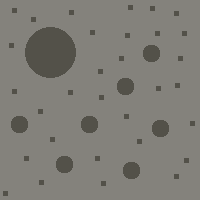

On the Subject of Navigating Nomai
So essentially how not to get lost in deep space.
A Nomai module presents you with 5 small spheres, one of them glowing, a large button on the bottom, a blue timer up top which is slowly turning more gray as time goes on, and an interactable status light. The glowing sphere will be referred to as the ‘sun’ and the other spheres as ‘planets’, the button on bottom as the ‘main planet’ and the status light as the status light.
Pressing the planets will either make you move to the planet you pressed, will make you move to a dark purple planet (known as the 6th planet), or will make the timer immediately deplete. The timer will also immediately reset if you try to travel to the sun. (In very rare circumstances, this will take you to the 6th planet instead.) Pressing the Main Planet or Status light will have a chance to change the colour of the timer, which will be important later.
The timer at the top of the module, once depleted, will return everything you did before it emptied back to its original state, and the module will essentially loop, whilst displaying you got either a strike or solve for a brief moment, whilst not actually performing either action. Your goal is to end this time loop by following a specific condition, turning the timer a certain colour, and navigating to a certain 6th planet, which isn’t shown on the module.
To start, we need to figure out the condition that will end the time looping mechanism, so that we don’t end it too early, and cause a REAL strike. This can be found by taking the main planet you start on in the following table:
| Main Planet: | If: | Then: | Otherwise: |
|---|---|---|---|
 |
An indicator shares a letter with the serial number. | Strike the same way you did the previous loop. (It will affect the next loop.) (Strikes from time are ignored.) | Navigate to this planet immediately after navigating away from it. |
|  | There are at least two unlit indicators. | Interact with the sixth location. | Interact with any other planet. |